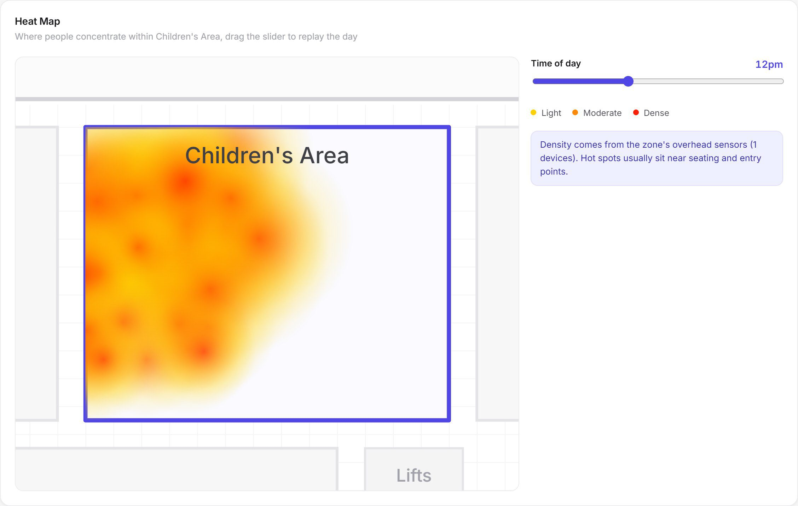
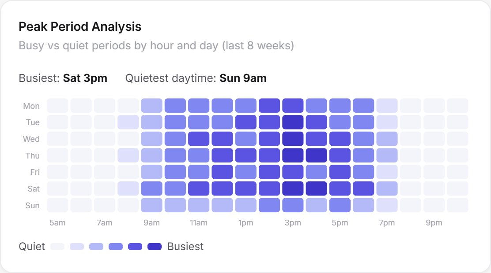

Councils & civic
People counting and crowd capacity for councils.
Libraries, community centres, events and customer service points, managed with live crowd numbers instead of guesswork, plus the evidence to justify funding.
Outcomes
What you can achieve.
- Crowd capacity and safety. Live counts against fire and venue limits, with alerts before limits are reached.
- Service levels. Queue and wait-time tracking at customer service points.
- Opening hours and staffing. Match hours and rosters to when the community actually visits.
- Evidence for funding. Visitation reports that prove the value of community facilities.
- Events. Temporary counting for attendance and crowd management.
- Active transport. Pedestrian and cyclist counts on shared paths and trails.

In the platform
See where crowds build, room by room.
Heat maps show where people concentrate in a library or centre and replay the day hour by hour, so you can manage crowding before it becomes a safety issue.
In the platform
Plan hours and staff around real demand.
Peak-period grids show the busiest and quietest hours of each day, so opening hours and rosters match how the community actually uses each facility.

Metrics
The numbers you get.
Visitors & attendance
Daily, weekly and seasonal visitation per facility.
Live occupancy
People present now against each space's limit.
Peak periods
Busiest and quietest hours by day.
Dwell time
How long people stay in libraries and centres.
Queue & wait
Service desk wait against targets.
Repeat visitation
New versus returning community members.
FAQ
Questions & answers
How do councils use people counting?
Councils use people counting to manage crowd capacity and safety in libraries, civic centres and events, to set opening hours and staffing around real demand, to monitor service-desk queues, and to report visitation as evidence for funding and planning.
Can it monitor crowd capacity at events?
Yes. Temporary sensors can be deployed for events to track attendance and live crowd numbers at entrances and zones, with alerts to staff before venue limits are reached.
Does it work for public libraries?
Yes. Libraries are one of the most common uses: visitor counts, occupancy by area such as reading rooms and children's areas, peak periods, dwell time and study-room utilisation.
Is people counting in public spaces privacy compliant?
Counting is anonymous. Processing happens on the device and data is masked at source, so no images or personal information are stored or transmitted, which supports councils' privacy obligations.
Can it count cyclists and pedestrians on shared paths?
Yes. Place Performance measures pedestrian and cyclist volumes and direction on shared paths, trails and in parks, so active-transport use can be tracked over time.
Can the data support grant applications?
Yes. Automated visitation reports provide consistent, independent evidence of how facilities are used, which is useful for grant applications, annual reports and council briefings.
See your places in a new light.
Book a 30-minute walkthrough and we'll scope a pilot for one of your sites: sensors, installation, software and insights in one agreement.